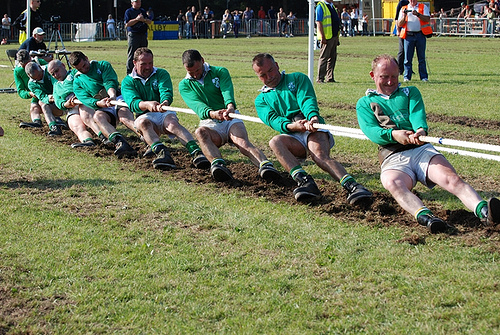
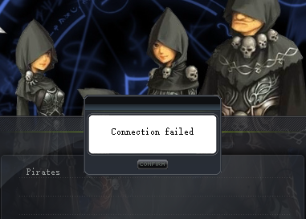
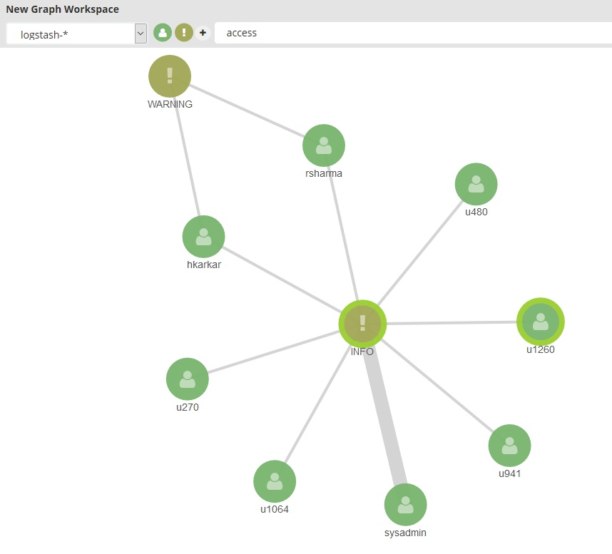
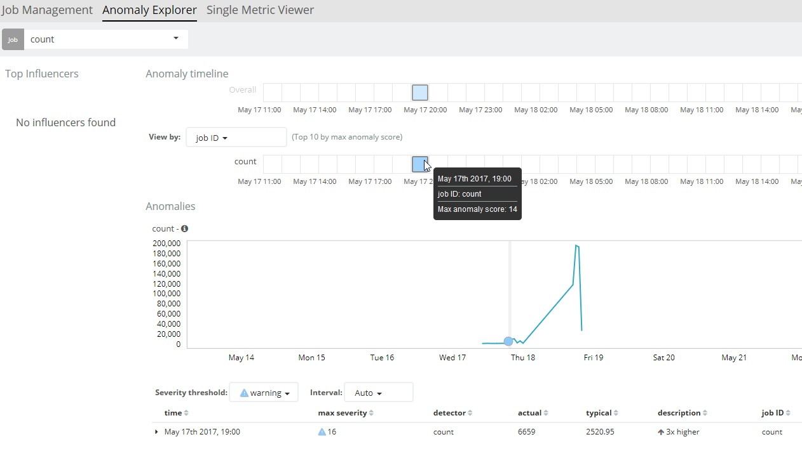
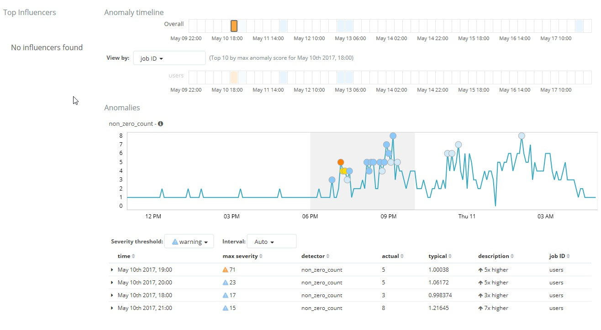
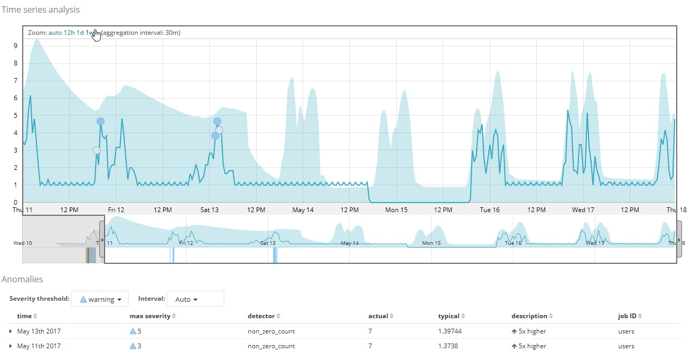

for dev logging
python elk.py
python elk.py --keep
python elk.py --pull

python elk.py --host https://au02sp-t-xweb1.semiprod.iress.com.au/pwmukmaster

python elk.py --remove




ELK_KEEP ELK_REMOVE ELK_HOST ELK_PULL
/